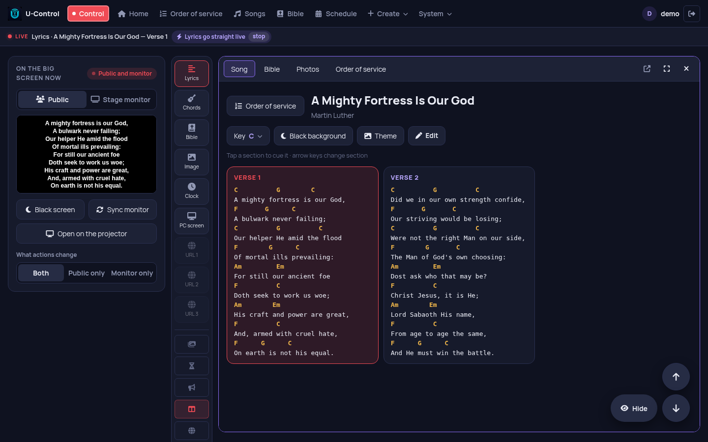
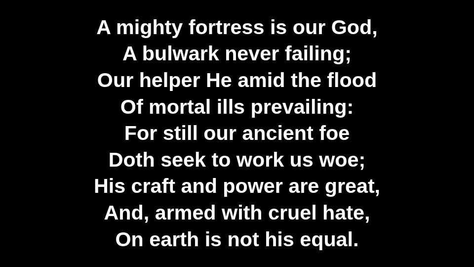
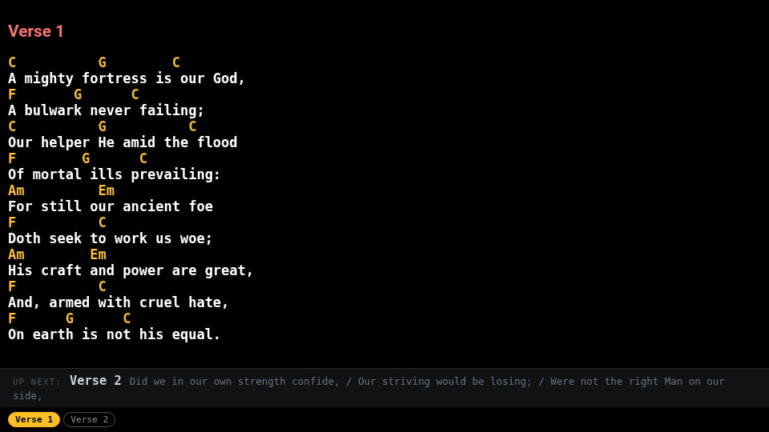
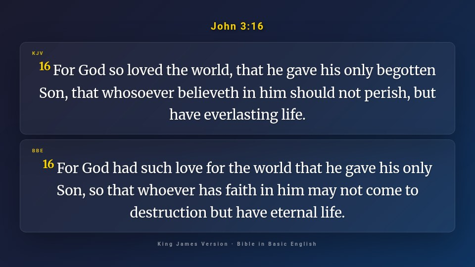
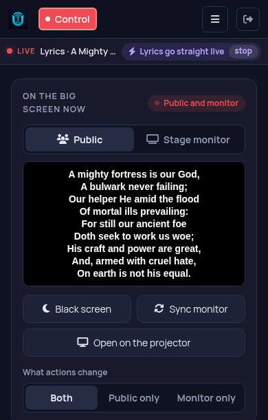

Your church's projection, controlled from your phone
Lyrics with chords, Bible, PowerPoint, photos, videos and the order of service on the big screen. One computer runs U-Control, and any phone, tablet or PC on the network controls it. No internet needed during the service.
Also runs on Raspberry Pi, Linux and Docker.In English and Portuguese: choose the language in System → Language, or leave it on Automatic to follow each person's browser.

How it works
The operator isn't stuck at the projection computer: they can be on stage, at the sound desk or anywhere in the church.
Install on one computer
The computer connected to the projector or TV runs U-Control. On Windows, just install it; it lives in the system tray, next to the clock.
Open it on your phone
On the same network (Wi-Fi or cable), scan the QR code or type the address. Nothing to install on the phone.
Run the service
One tap sends the lyrics, verse or slide to the big screen. The musicians' stage monitor follows along.
Everything the service needs
Built inside a church, for the everyday work of the media and worship teams.
Lyrics with chords
The big screen shows only the lyrics; the stage sees the chords and the next section. Each musician can transpose on their own device.
Bible in two versions
Search by reference and show two translations at once. Public-domain translations included, such as the King James Version.
PowerPoint with animations
Upload the .pptx and the slides go to the screen with their transitions, animations and Canva fonts.
Order of service
Plan the sequence ahead: songs, readings and announcements open in order, one after another.
Photos and videos
Image and video gallery. Anyone in the church can send photos from their phone.
Screen sharing and websites
Show a computer's screen over the network, or open a website full screen and scroll it from your phone.
Stream Deck
Hardware buttons for next, previous, black screen, announcements and timer, through Companion or similar tools.
Clock, countdown and announcements
Countdown to the start of the service, a clock, and announcements scrolling at the bottom of each screen.
Bring your songs
Import from OpenLP and other OpenLyrics apps, ChordPro, Holyrics or plain text. Full backup, and moving songs and services to another PC.
A screen for everyone
The congregation, the musicians and the operator each see what they need, always in sync.




The Control panel fits in your pocket
The same Control panel works on phones and tablets, in the browser. Run the service from the back of the church, the stage or the sound desk. More than one person can control at the same time.
Download and install
Choose where U-Control will run. Phones and the other screens only need a browser.
Windows
Installer with everything included. Opens the screens on the second monitor or projector and tells you when a new version is out.
Download the installerRaspberry Pi / Linux
Ubuntu, Debian, Mint or Raspberry Pi OS. A Raspberry Pi becomes the church's server, using very little power. One command installs it:
curl -fsSL https://brunomint.github.io/U-Control/instalar.sh | bashDocker
For those who already have a server. Ready-made image for PC and Raspberry Pi:
docker compose up -dQuestions
Is it really free?
Yes. U-Control is open source (MIT license): no subscription, no ads and no usage limits. Install it on as many computers as you like.
Is it in English?
Yes. Since version 1.0.7 the interface is in English and Portuguese (System → Language). Lyrics and Bible verses appear in whatever language you use, and the King James Version and the Bible in Basic English come included. Searching the Bible by reference still uses the Portuguese book names for now; you can always pick the book and chapter from the list.
Does it need internet?
Not during the service. Everything runs on the church's local network. The internet is only used if you want it, for example to download audio from YouTube or show a website on the screen.
Which Bibles are included?
Only openly licensed or public-domain translations: the King James Version and the Bible in Basic English in English, plus Portuguese, Russian, Chinese and Arabic ones. Copyrighted translations can be added by a church that has the right to use them.
I already use another program. Will I lose my songs?
No. U-Control imports songs from OpenLP and other OpenLyrics apps, ChordPro, Holyrics (JSON) and plain text, with no retyping.
What computer do I need?
An ordinary Windows computer, or a Raspberry Pi. To convert PowerPoint files on Windows it uses LibreOffice, which the installer offers to install.
I found a problem. Where do I report it?
Open an issue on GitHub, or ask in the Discussions. English is welcome.
Try it at your next service
Install it, create the first user and open the Control panel on your phone. It takes a few minutes.